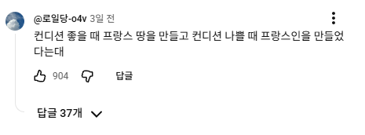

65 · 8 · 6 시간 전 · 원문

수집 당시 댓글 8개
으으으으으으그 · 6 시간 전
그러나 못 막았죠?
조부자 · 6 시간 전
하지만 독일이 먹었죠?
회제공량 · 5 시간 전
독일만 잘 방어하면 나라 보호가 됐는데 왜 그지랄로... 아 참 프랑스인이었지...
↳ 답글 · Asteria · 5 시간 전
그 독일국경은 잘 방어했어 ㅋㅋ아르덴 숲이 뚫려서 그랬지 ㅋㅋ
배맛있는제육덮밥 · 5 시간 전
근데 그걸 못 막고말죠
느부갓네살 · 5 시간 전
kmki · 4 시간 전
바나나맛분유 · 3 시간 전
근데 왤케 냄새나고 소매치기하고 사기쳐?


그러나 못 막았죠?